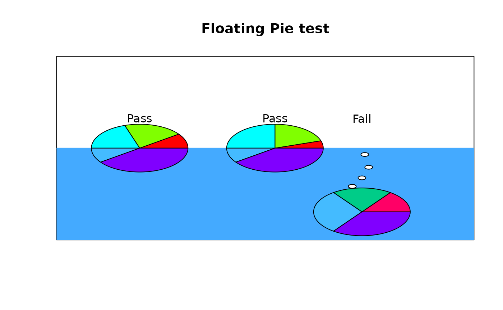
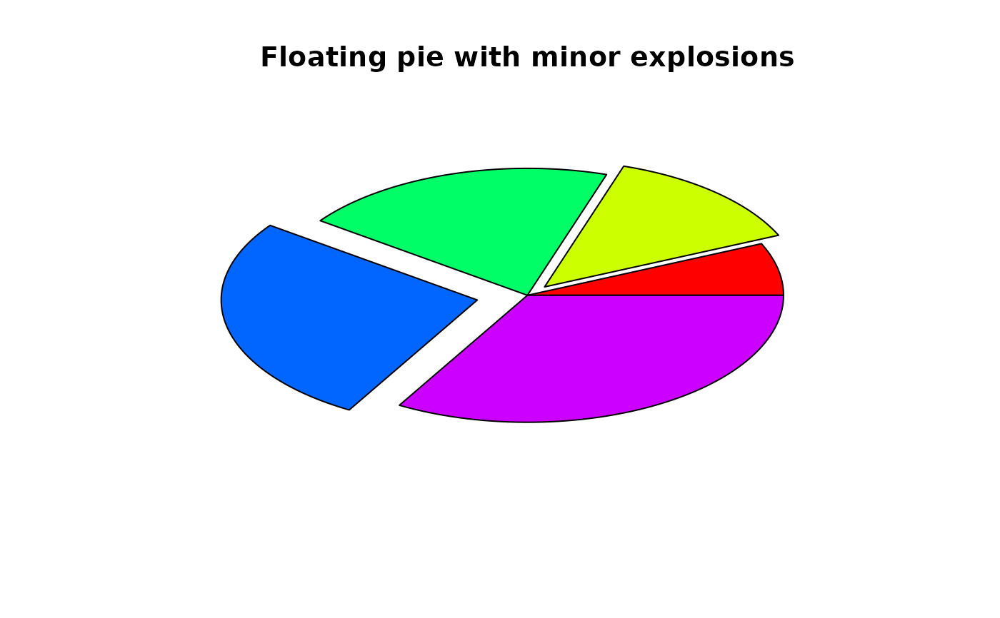

Display a floating pie chart
floating.pie.RdDisplays a pie chart at an arbitrary position on an existing plot
Usage
floating.pie(xpos=0,ypos=0,x,edges=200,radius=1,col=NULL,startpos=0,
shadow=FALSE,shadow.col=c("#ffffff","#cccccc"),explode=0,...)Arguments
- xpos,ypos
x and y position of the center of the pie chart
- x
a numeric vector for which each value will be a sector
- edges
the number of lines forming a circle
- radius
the radius of the pie in user units
- col
the colors of the sectors - defaults to rainbow
- startpos
The starting position for drawing sectors in radians.
- shadow
Logical - whether to draw a shadow
- shadow.col
Colors to use for a shadow.
- explode
How much to "explode" one or more of the sectors.
- ...
graphical parameters passed to polygon
Details
floating.pie displays a pie chart with an optional shadow on an existing plot (see polygon.shadow). floating.pie now accepts NAs or zeros in x, but simply ignores them.
floating.pie can be useful when multiple pie charts are placed on a plot overlaying something else, like a map.
Value
The bisecting angle of the sectors in radians. Useful for placing text labels for each sector. If any values in x were zero or NA, no angle is returned for that value. This means that the user must adjust the labels accordingly if pie.labels is called.
If floating.pie is called with no graphics device, it will try to open one with the appropriate dimensions.
If pie.labels is called, ensure that the center of the pie chart and any explode values are the same.
Note
As with most pie charts, simplicity is essential. Trying to display a complicated breakdown of data rarely succeeds.
Examples
plot(1:5,type="n",main="Floating Pie test",xlab="",ylab="",axes=FALSE)
box()
polygon(c(0,0,5.5,5.5),c(0,3,3,0),border="#44aaff",col="#44aaff")
floating.pie(1.7,3,c(2,4,4,2,8),radius=0.5,
col=c("#ff0000","#80ff00","#00ffff","#44bbff","#8000ff"))
floating.pie(3.1,3,c(1,4,5,2,8),radius=0.5,
col=c("#ff0000","#80ff00","#00ffff","#44bbff","#8000ff"))
floating.pie(4,1.5,c(3,4,6,7),radius=0.5,
col=c("#ff0066","#00cc88","#44bbff","#8000ff"))
draw.circle(3.9,2.1,radius=0.04,col="white")
draw.circle(3.9,2.1,radius=0.04,col="white")
draw.circle(3.9,2.1,radius=0.04,col="white")
draw.circle(4,2.3,radius=0.04,col="white")
draw.circle(4.07,2.55,radius=0.04,col="white")
draw.circle(4.03,2.85,radius=0.04,col="white")
text(c(1.7,3.1,4),c(3.7,3.7,3.7),c("Pass","Pass","Fail"))

plot(0,xlim=c(-1.5,1.5),ylim=c(-1.5,1.5),type="n",axes=FALSE,
main="Floating pie with minor explosions",xlab="",ylab="")
floating.pie(x=1:5,explode=c(0,0.1,0,0.2,0))
